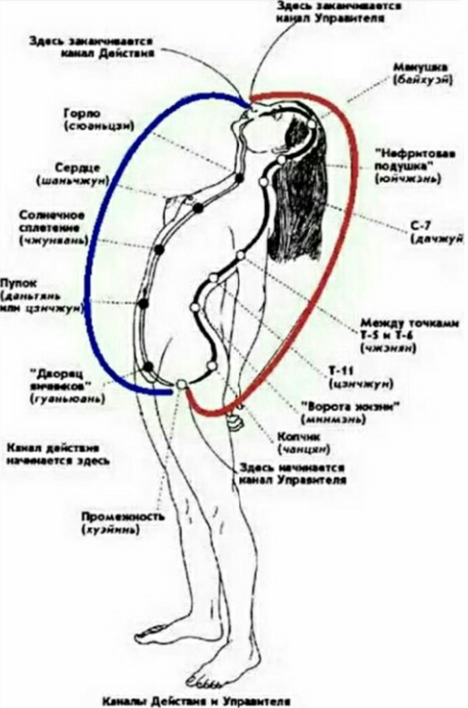
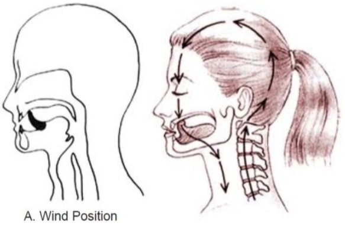
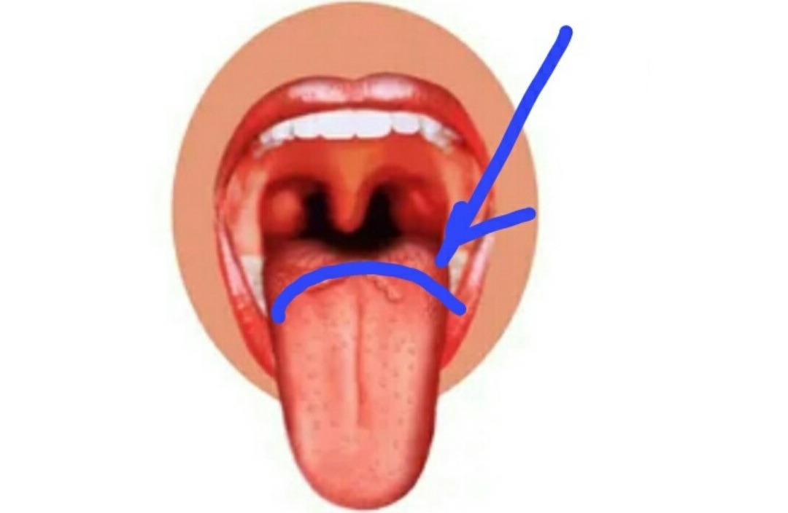
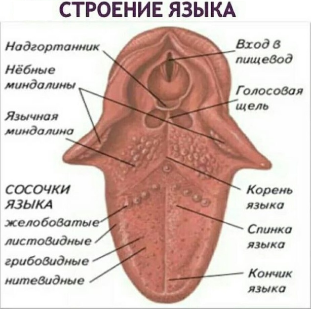
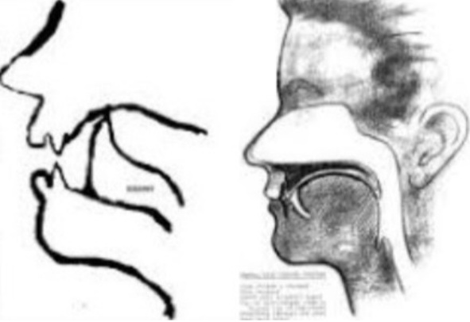

Майк Мью вовсе не первым открыл необходимость держать язык на небе. Древние обладали этими знаниями за тысячи лет до мьюинга. Те, кто практикует йогу и Цигун, знают о необходимости держать язык прижатым к небу. Вот выдержка из классического йогического текста Гхеранда Самхиты:
"Где бы ни находился йогин и что бы он ни делал, он всегда должен держать язык кверху и задерживать дыхание. Это Набхо-мудра, отгоняющая болезни от йогина"... (задержка дыхания стимулирует выработку гормона роста, что ведет к оздоровлению и омоложению организма).
Индийский гуру Свами Шивананда поясняет, что Набхи-мудра (замок языка) - касание нёба кончиком языка используется для замыкания двух основных каналов циркуляции праны (жизненной энергии) в системе каналов тонкого тела человека.
Китайская медицина считает язык «переключателем», соединяющим центральные каналы энергии ци, и замыкающим «маленький небесный контур». Положение языка в углублении на нёбе за передними зубами считается базовым соединением каналов и называется «точкой ветра»./p>
Язык является как бы мостиком, позволяющим соединить воедино два главных энергетических канала в теле человека — функциональный и управляющий, по которым движется энергия разной полярности.
Если язык не касается нёба, контакт между ними нарушается, в месте "разрыва" происходит утечка огромного количества жизненной силы, что приводит к серьезным искажениям характера циркуляции энергии во всех потоках энергетического тела.
Таким образом, устранив с помощью так называемого "языкового замыкания" разрыв контура малого небесного круга, мы предотвращаем достаточно существенные утечки энергии и сохраняем здоровье. Благодаря выработанному подсознательному рефлексу держать язык в этом положении, у человека развивается чувство силы и спокойствия.
Итак, все новое - это хорошо забытое старое!
Как мы увидели, будучи выдвинутой вперёд и вверх, максилла обеспечивает надлежащую поддержку глазным яблокам, поднимает и красиво очерчивает скулы, привлекательно укорачивает расстояние между носом и верхней губой и создаёт широкую улыбку. Вперёд и вверх эту «кость красоты» выталкивает именно давление, создаваемое правильным положением языка на нёбе и взрослый тип глотания. Язык всегда должен быть плотно прижат к нёбу всей поверхностью.
Как же найти это правильное положение языка?
Давайте сначала проведём тест: высовываем язык и смотрим, есть ли на нем по краям отпечатки зубов. Если да - ваш язык лежит внизу (у меня были глубокие отпечатки, сейчас почти исчезли). Поскольку большинство из нас имеет недостаточно широкую челюсть, поэтому нам сложно, а то и невозможно расположить язык правильно, всею поверхностью на нёбе.
Итак, сперва определимся в понятиях. На сайте "зуб за зуб" используется термин "корень языка", я же называю это место "спинкой". Мы пообщались с автором сайта и поняли, что имеем в виду одно и то же). На фото ниже это место обозначено синей линией.
 Итак, наш язык нужно постараться (у кого как получится сначала) расположить максимально во весь рост и ширину на нёбе. При этом его кончик не должен упираться в зубы, а лежать чуть дальше, за буграми, там, где заканчивается резцовая кость.
Спинку нужно распластать дальше во всю ширину и плотно прижать к нёбу. Чтобы лучше понять это ощущение - произнесите испанскую букву n, как бы в нос.
Также, помогает сомкнуть зубы и глотнуть. В момент глотка язык ложится плотно на небо и совершает толчок вверх и в стороны. Прочувствуйте это ощущение - к такому положению языка и нужно стремиться в покое. Разница лишь в том, что во время глотка корень языка поднимается и перекрывает дыхательные пути, а в спокойном положении это невозможно, мы должны дышать).
НЕПРАВИЛЬНОЕ И ПРАВИЛЬНО ПОЛОЖЕНИЕ ЯЗЫКА
НЕПРАВИЛЬНОЕ И ПРАВИЛЬНО ПОЛОЖЕНИЕ ЯЗЫКА
Если вашему языку тяжело, он сильно напрягается и устаёт, делайте первое время акцент на приемы руками, со временем мышцы языка окрепнут, а небо станет более пологим и станет легче держать язык наверху. Для расслабления корня языка можно выполнять следующий прием, который способствует усилению притока крови к гортани и к шее, расслабляет язык и растягивает мышцы челюсти, что, в том числе, помогает убрать второй подбородок и тонизирует кожу шеи.
Поза Льва в йоге недаром считается страшно полезной и используется даже для лечения ангин. Можно выполнять ежедневно.
Также для снятия напряжения с языка и твердой мозговой оболочки черепа (ТМО) можно делать приемы из урока 17.
А теперь, опережая вопросы, так как они у многих повторяются по опыту предыдущего курса, давайте отвечу на самый популярный).
Вопрос: - У меня не получается разложить язык ровно, он сворачивается, упирается в зубы и т.п., как быть и где точно та точка, где должен размещаться кончик.
Ответ: - Поймите, что не так важно 1 см или 5 мм вы отступили от зубов и на 100% или на 30% ваш язык покрыл нёбо, если до сих пор вы вообще этого не делали. Наша с вами главная задача, исходя из своей собственной анатомии, максимально воздействовать на небо, подпирая его и оказывая давление языком вверх.
Если кончик лежит на зубах - вы будете давить в зубы, а наша задача давить не столько вперед, сколько вверх - в нос, в глаза. Этого мы добиваемся когда давим глубоко в центр нёба , а не в резцовую кость. Чтобы вам было легче- нашла хорошую инструкцию в интернете, посмотрите, на картинке стрелкой обозначено место, где должен быть кончик языка- т.н. точка покоя.
И пожалуйста не смущайтесь, если язык не лежит полностью, даже 30% языка на нёбе, если до этого он болтался вялой тушкой, это уже очень здорово!
Это упражнение тренирует правильное положение языка в состоянии покоя. Переходить к следующему упражнению можно лишь уверенно освоив данное упражнение.
Точка расположена прямо за верхними резцами - в 5мм за ними, где нёбо изгибается вверх. Не нужно стискивать или сжимать задние зубы. держи их слегка сомнкнутыми. Ежедневная "тренировка" вырабатывает у тебя привычку к естественному положению языка в покое.